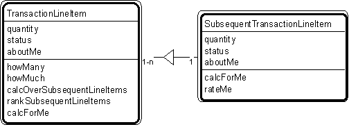

Pattern #8. "Transaction Line Item - Subsequent Transaction Line Item" Pattern // transaction patterns

Typical object interactions
- howMany --> calcForMe
- howMuch --> calcForMe
- calcOverSubsequentLineItems --> calcForMe
- rankTransactions --> rateMe
Examples
- Transaction line items: agreement, assignment, authorization, contract, delivery, deposit, incident, inquiry, order, payment, problem report, purchase, refund, registration, rental, reservation, sale, shift, shipment, subscription, time charge, title, withdrawal.
- Transaction line item - subsequent transaction line item: order line item - shipment line item; reservation line item - rental line item; shipment line item - delivery line item.
Combinations
Pattern #6. "Transaction - Transaction Line Item"
Pattern #9. "Item - Line Item"
Pattern #10. "Specific Item - Line Item."
Related strategies:
Strategy #17. "Select Transactions" Strategy
Strategy #54. "Establish Transaction Attributes" Strategy
Strategy #76. "Establish Transaction Object Connections" Strategy
Strategy #96. "Establish Transaction Services" Strategy